Flask
Flask是一个用于web开发的微型框架，它具有一个包含基本服务的核心，其他功能可以通过扩展实现。
Flask有三个依赖：路由，调试，和web服务器网关接口。
虚拟环境
虚拟环境是python解释器的一个私有副本，可以避免安装的Python版本与系统预装的发生冲突，为每个项目单独创建虚拟环境，可以保证应用只能访问虚拟环境中的包，从而保持全局解释器的干净整洁，并且不需要管理员权限。
vscode中需要安装第三方库帮助创建虚拟环境
1 | pip3 install virtualenv |
创建虚拟环境
1 | virtualenv venvname |
选择解释器
1 | virtualenv -p D:\python311\python.exe venvname |
启动
1 | venv\Scripts\activate |
退出
1 | deactivate |
基本概念
域名
域名是网站的名字或地址，用于代替难记的IP地址
端口号
每台服务器可能同时多个服务(网页，邮件，数据库)，端口号用于指定具体的服务
Session和cookie
HTTP请求是无状态协议，不保存状态
session 允许你在不同的请求之间存储和共享数据。它实际上存储在服务器端，但会通过一个 cookie 在客户端传递给浏览器。
通过 session，你可以在多个请求之间持久化用户的状态和信息，比如：用户名、登录状态、购物车数据等。
当客户发起第一次请求时，服务器会建立与客户端的会话并将会话的唯一标识符Session ID传送给客户，服务器口语将一些信息保存在会话中，当客户第二次发起请求时会携带Session ID到服务器中，服务器通过Session ID获取会话中的信息
跨域限制
跨域限制(同源策略)防止一个网站上的脚本与另一个不同来源上的资源进行不受限制的交互
不同的来源指的是协议（例如 http 或 https）、域名（例如 example.com）和端口号相同
- 同源：
- 不同源：
CSRF
CSRF——跨站请求伪造，恶意网站通过已认证的用户浏览器在受信任站点上执行非正常操作，一般通过外部链接实现
CSRF防护机制会基于secret_key生成token，服务器再生成页面时会给用户一个token，在提交时用户需要携带token一起，然后服务器会检查token是否正确，外部网站是无法访问网站页面的token。
应用基本结构
初始化
应用实例是整个网站的心脏，所有的请求都会有Flask实例处理
1 | from flask import Flask |
路由和视图函数
客户端把请求发送给web服务器，Web服务器再把请求发送给Flask应用实例，应用实例需要知道对每个URL请求去要运行那些代码，所以保存了一个URL到Python函数的映射关系，处理URL和函数之间关系的程序称为路由。
将index函数(视图函数)注册为根地址的处理程序，函数的放回置称为响应
1 |
|
匹配URL中的参数部分，使用尖括号围起
1 |
|
启动方式
终端输入
1 | set FLASK_APP=app.py # 入口 |
其他参数有
1 | --host=0.0.0.0 允许外部访问 |
1 | flask run --host=0.0.0.0 --port=8080 --debug |
这些参数可以在根目录下创建.flaskenv
1 | FLASK_APP=app.py # 指定Flask入口文件 |
使用前需安装插件
1 | pip install python-dotenv |
再执行flask run时可以自动读取配置
上下文
Flask中的上下文能在处理请求时方便地访问应用相关的信息，而不需要单独传递到函数中。
上下文分为请求上下文和应用上下文
应用上下文绑定了Flask应用实例，能够在全局范围内访问应用相关的对象
- current_app——当前正在处理请求的应用实例
- g——在请求期间存储临时数据
请求上下文绑定了每一个HTTP请i去，确保每个请求可以访问当前请求的相关内容，比如请求的参数，头信息，cokkies
request—— 包含当前请求的所有信息，如请求方法（GET、POST）、请求数据、表单数据、URL 参数等session: 用于在多个请求之间存储和读取用户的会话数据
请求钩子
请求钩子是在请求生命周期中的某些阶段执行的函数
- before_request 在每次请求之前运行。
- before_first_request 尽在处理第一个请求函数之前执行
- after_request 请求成功执行之后执行
- teardown_request 不管请求是否成功运行都执行
响应
视图函数默认返回状态码200，也可以手动设置
1 |
|
还可以返回第三个参数——由HTTP响应首部组成的字典
如果不想返回元组则可以使用Response对象
1 | from flask import make_response |
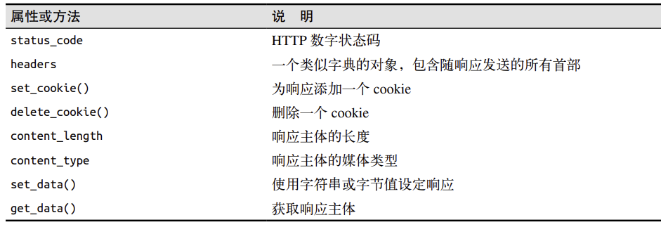
响应的一种特殊类型是重定向
1 | from flask import redirect |
模板
Jinja2
Jinja2用于将python中的数据和逻辑渲染到HTML模板中
变量输出
1 | <h1>Welcome, {{ user.name }}!</h1> |
条件语句
1 | {% if user.is_admin %} |
循环
1 | <ul> |
过滤器
1 | <p>{{ name|capitalize }}</p> |
capitalize 会将字符串的首字母大写，length 会返回字符串的长度。
模板进程
在base.html中放置block，block的名称自定义
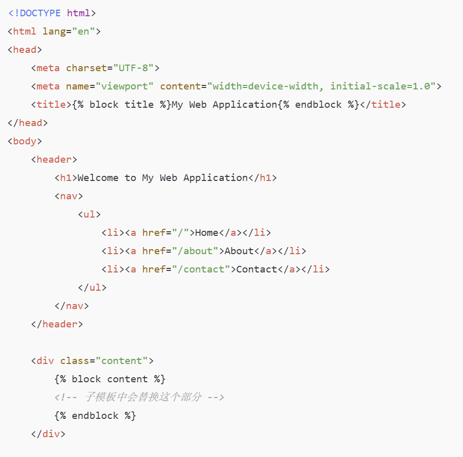
在index.html中继承base.tml，覆写block
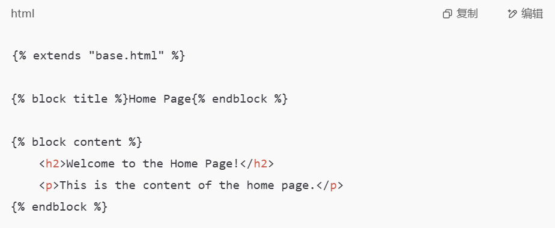
最后通过render_template渲染同时传入参数
1 | return render_template('index.html', name=name) |
render_template默认从templates文件夹下寻找内容
如果父模板的block原本就有内容并且子模版想要追加而不是覆写，就需要使用super()
base.html
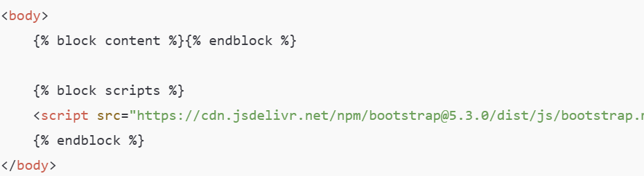
child.html
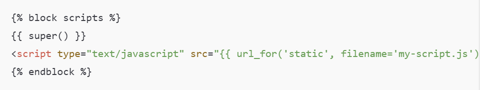
自定义错误页面
@app.errorhandler是用来处理特定HTTP错误的装饰器
1 |
|
链接
url_for()接受视图函数的名称，返回对应的url
1 | url_for('index') # 返回/ |
另一种应用是生成静态文件的URL
1 | {% block head %} |
日期和时间
web的用户可能来自世界各地，因此服务器需要统一处理时间
安装外部库
1 | pip install flask-moment |
需要在模板中导入，注意scripts标签要放到最顶部
1 | {% block scripts %} |
作为参数传入
1 | from datetime import datetime,timezone |
模板中添加
1 | <p>The local date and time is {{ moment(current_time).format('LLL') }}.</p> |
moment().format(‘YYYY-MM-DD HH:mm:ss’)格式化日期 常见格式有
'LLL'：Apr 11, 2025 9:08 PM'LLLL'：Friday, April 11, 2025 9:08 PMmoment().fromNow 显示相对时间 refresh设置刷新
moment().from() 和指定时间比较
moment(current_time).calendar() 日历格式 ——Today at 9:08 PM
Web表单
处理表单所需的库
1 | pip install flask-wtf |
Flask-WTF 默认启用了 CSRF防护机制，需要给secret_key来加密，生成令牌
1 | import os |
表单类
表单类继承FlaskForm基类，其中每个字段代表一个表单项
1 | from flask_wtf import FlaskForm |
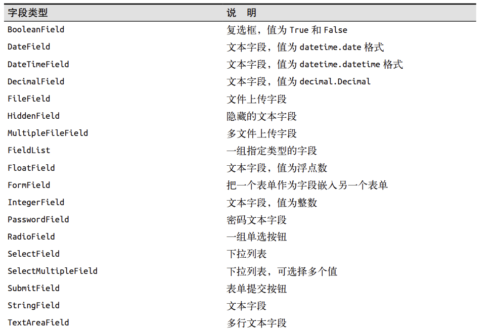
验证函数
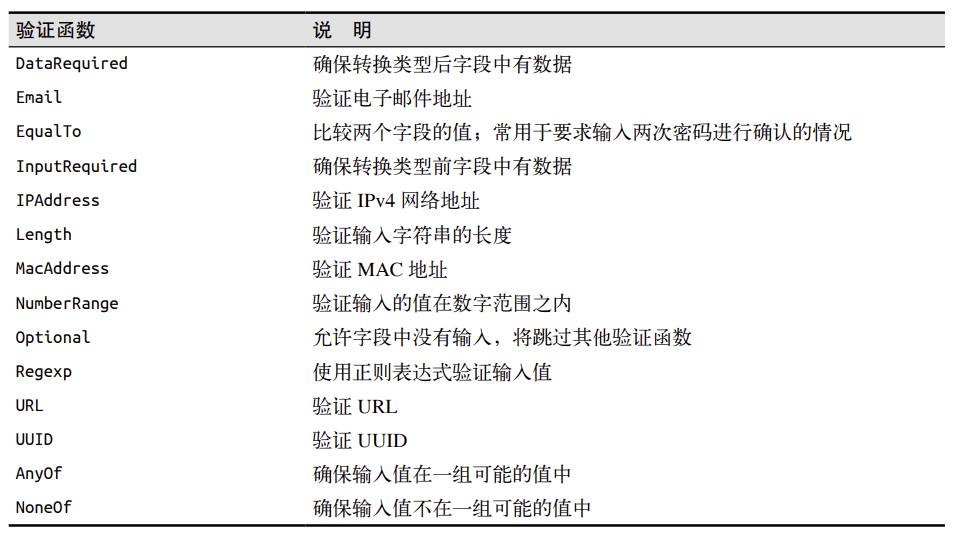
表单渲染为HTML
通过视图函数传入form参数(表单对象)
1 | <form method="POST"> |
或者使用Bootstrap的表单样式，传入form快速渲染
1 | {% import "bootstrap/wtf.html" as wtf %} |
validate_on_submit会判断当前是不是POST请求，以及表单是否通过过了验证器
1 |
|
重定向
表单提交后再次刷新浏览器会重复提交表单，浏览器会出现警告
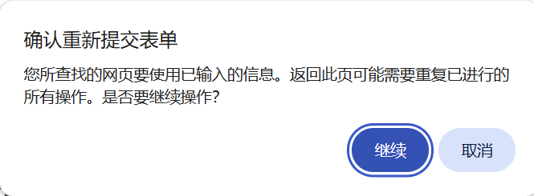
因此对于POST操作，使用重定向作为请求的响应，但是由于HTTP协议是无状态的，即每个请求和响应都是独立的，服务器无法记住不同请求的数据，所以需要session储存数据
闪现消息
有时请求完成后需要让用户知道状态发生了变化，可以通过Flask内置的flash()实现，同时还要使用get_flashed_messages()渲染页面
1 | from flask import Flask,render_template,session,redirect,url_for,flash |
渲染
1 | {% block content %} |
数据库
SQLAlchemy是pyhton中最流行的ORM框架，ORM框架指对象关系映射，将数据库表结构映射为python类。
flask_sqlalchemy是一个在flask项目中使用SQLAlchemy更便捷的扩展
初始化
flask中选用SQLite数据库，SQLite 是一个轻量级的嵌入式的关系型数据库，它不需要独立的数据库服务器，所有的数据都保存在一个本地文件中，它是“零配置”的数据库 —— 安装 Python 后就可以直接使用。
初始化
1 | basedir = os.path.abspath(os.path.dirname(__file__)) # 获取当前程序的目录 |
定义模型
继承基类
1 | class Role(db.Model): |
常用的列选项
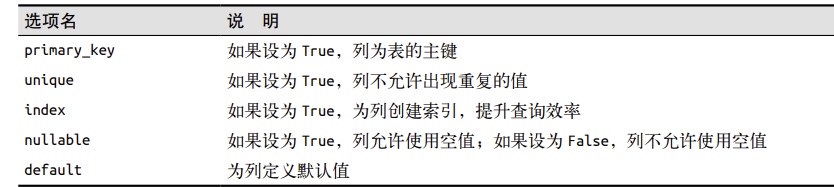
数据库操作
操作可以在flask shell中进行(避免代码重复执行)，使用exit()退出shell
创建表
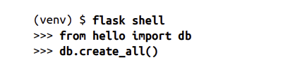
插入行
先创建
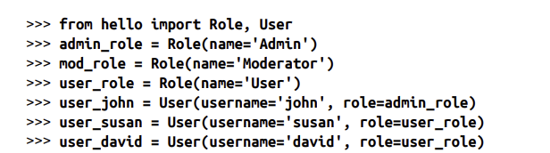
再插入
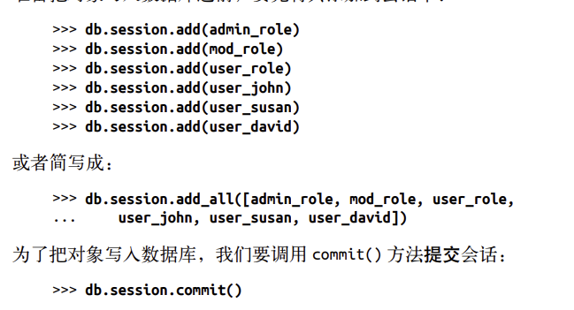
修改行
修改后重新提交
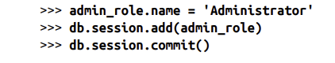
删除行
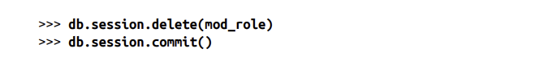
查询行
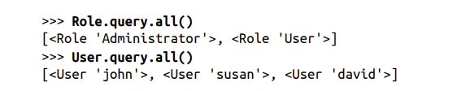
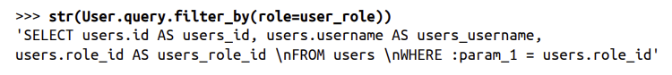
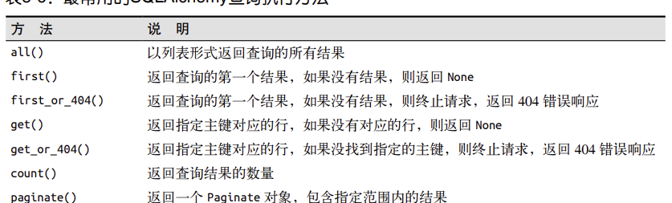
集成python shell
避免重复导入数据库实例与模型，可以预先配置shell
1 | # 自定义shell启动时自动导入的变量 |
数据迁移
在开发的过程中有时需要修改数据库模型，并且修改后还要更新数据库。
仅当数据库表不存在时，Flask-SQLAlchemy才会更根据模型创建，因此更新表的方式就是先删除旧表，但是这样会丢失数据库一种的全部数据。
另一种更新表的方式是使用数据库与迁移框架
1 | pip install flask-migrate |
初始化
1 | from flask_migrate import Migrate |
flask db init
操作方式类似于git
对模型做修改，执行flask db migrate命令flask db migrate -m “initial migration”
把改动应用到数据库 flask db upgrade
撤销上一次改动flask db downgrade，可能会导致数据丢hi是